留言區的常見問題
整理自貼文留言，作者回覆為主。
可以直接照著改嗎？ 可以，改完再微調。也有留言建議先不改、玩一段時間，再逐項試推薦值，比較差異。
左操控桿盲區一定要設 7 嗎？ 不一定。作者回覆看個人習慣，截圖中左右盲區都是 1。
開車有第一人稱或車內第三人稱嗎？ 作者回覆：目前只有電影模式的自動駕駛看得到車內畫面。
切換瞄準目標很慢怎麼辦？ 作者建議自動鎖定後，躲在掩體重新瞄準，通常還蠻準。
GTA 5 可以套用嗎？ 留言建議先玩玩看，GTA 5 不太需要調設定。
相關串文提到的「控制模式」 其他使用者在相關串文建議在設定裡把控制模式選「經典」。這不在上面的截圖內，請自行確認。
開局十件事：存檔、專注、後備箱到買車庫
整理自 Threads 貼文（@game_tom777）附的影片，共 4 分 36 秒，分成 10 個章節；原影片標題是「開局別一直刷錢」。
取樣約每 8 到 10 秒，句子可能不完整（通用說明見頁首「怎麼讀這份攻略」）。重要細節請以影片為準。
01 手動存檔
同一個任務，走法會不一樣；想回頭只能讀之前的手動檔。
字幕提到第一章結尾，以及「沒法從選單裡重玩」。
全遊戲只有 15 個手動存檔位；自動存檔會蓋掉舊檔。
建議需要時就新存一個。 02 裝消音器
字幕：第二件事就是買消音器。畫面為武器改裝頁的「槍口與消音器」分類。 03 專注模式
同時按兩個搖桿（L3 + R3）開啟。
隔著牆也能看見目標。
養成隨時開專注模式的習慣。 04 作息健身
字幕：第四件事是把每天的作息當回事。
角色的體力、專注等屬性，需要定期鍛鍊才保得住。 05 後備箱
畫面顯示「4 把」，推測是後備箱可放的武器數，字幕未明講，請自行確認。
就算中途換了一輛自己的車也適用。
衣櫃可把衣服放進後備箱，最多 5 套。 06 先變裝
動手之前先變裝。
警察現在不會顯示在小地圖上。
趁這時候避開警察視線，鑽進小巷。 07 打腿別打頭
字幕：打中腦袋和心臟是直接要命。
字幕也提到，開槍打頭還是打腿，都會影響結局。 08 別急著離島
前期別急著離開 Key Lento。
島上有街機可玩，字幕提到「錯過就沒了」。 09 別埋頭刷錢
字幕提到手裡的錢會被清空（畫面顯示 $0），也提到 Jason 和 Lucia 的錢會被清空。
前後文沒取樣完整，觸發條件不明，請看影片確認。 10 買車庫
攢下的第一筆大錢先買車庫。
平時在街上順來的車不算你自己的；登記好以後才算。
登記、車庫、追蹤器的說明見「車輛與賺錢 」章的名詞說明。
10 個操作技巧（PS5）
整理自你提供的圖片，圖上標示為「PS5 操作」。作者不明。
7 L2 R3 手放開就會自動解除。
10 近戰模式（實用格鬥技巧）
R2 R2 □ R2 □□ 德式背摔、摔角手面具等見「摔角手與下車技巧 」。
看原圖
快速移動：自動開車、計程車、覓騎、打電話
電影模式自動開車： Instagram @game_tom777「開局必看攻略」0:01 到 0:18 字幕：「打開電影模式就能自動開車了」「這遊戲是有自動開車的」。離車很遠不要叫計程車： 同一支影片字幕：「如果你離車子很遠，不要打出租」；叫車確認畫面有「更換目的地」「確認（$90）」「取消行程」，字幕：「特別貴！」（0:14 到 0:53）。改打電話給聯絡人： 字幕：「車子壞了也是，直接打給他」「直接打給聯絡人裡的喬伊」（約 0:21、1:00 到 1:07，畫面是手機聯絡人）。從上下文看應該是叫回自己的車，但字幕沒明講。覓騎 App： 社群貼文（Threads @su_o925）說路程好幾公里可以用 App「覓騎」快速略過，只要 $100。$90（影片畫面）與 $100（貼文）兩個價格對不上。留言說法・未驗證 有人說覓騎隨便一次都幾百塊，可能依距離計價；另一位說付完錢後下車、把司機拉出車外、打倒搜刮、開車閃人，就能搭免費的。
賣車用的搭計程車＋會合： 另一半開要賣的車、自己搭計程車、再選「會合」，見社群小技巧 第 3 則（Threads @su_o925 Part 2，作者說要花幾百塊車資）。
依章節查：每一章能做的事
這一章只列來源明確寫出章節 的內容，連到完整章節。來源沒寫的不猜，放在最後。判斷依據是影片標題、字幕與貼文原文，影片標題寫「第一章必拿」代表作者說該章拿得到，不代表我在遊戲裡驗證過。
1 第一章金色／傳說武器、防漏清單
金色與傳說武器： Somi 醬影片標題「第一章必拿 15 把免費傳說武器」，見塵影片標題「第一章必拿 10 把武器」。對應 金色武器 的 16 張卡（每張卡的「章節」欄有標註）：霍克與立德 .38（唐尼的車之前）、刺客尼帕 .38、走私客金雀花 425、沼澤誘餌阿克勒斯、殘酷獵人 SM-69、螃蟹屋 VF5、獵魚王 W-22、獵人賴爾德 350、馬拉邦特幫流浪者、陰謀論者 9 型、黑蛾幫 VF-G1、馬拉邦特幫 KZ-59、槍械迷 SMS-01、蟑螂極限 556、紅色倉庫三把（見塵）、H-AT 火箭筒（見塵放在「加碼」，章節不確定）。錯過就回不去的事： 第一章要做的事 （17 項，玫玫物語）：接露西亞出獄前、處理唐尼的車之前、開始「遊客陷阱」之前，以及任務進行中才拿得到的兩件。手動存檔： 開局十件事 第 1 項提到第一章結尾，「沒法從選單裡重玩」。武器消失怎麼辦（Somi 影片 9:25 到 9:35，已讀完）： 字幕原句：「另外提醒大家（9:25），同類型的武器可能會互相覆蓋（9:27），如果發現剛拿到的傳說武器不見了（9:30），武器櫃裡面重新取回（9:33）」。畫面是武器櫃的「異款」清單：KZ-59 有三個款式（運毒猛驟、黑蛾幫、馬拉邦他幫），目前裝備的款式打勾，其他款式在清單裡切換。照字幕與畫面推測做法：到武器櫃 的「異款」重新選回你要的那一款（影片沒有逐步操作示範，是我的推測）。影片沒說「覆蓋」的詳細規則；9:35 之後是結尾（字幕讀到「如果還有發現其他隱藏的武器」，後半句沒取樣到；以及「如果這支影片有幫你，就送 Somi 一個喜歡吧」）。▶ 影片 9:25
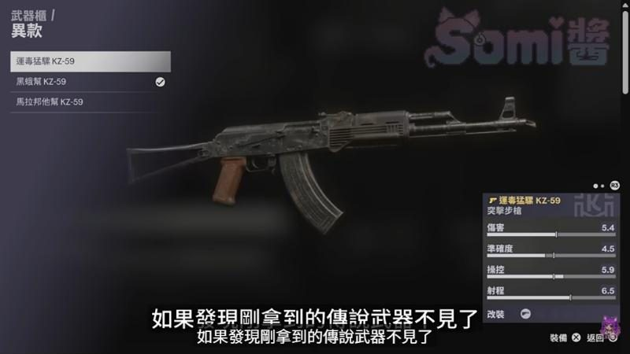
武器櫃「異款」清單（影片 9:30）：三個 KZ-59 款式，打勾的是目前裝備的 2 第二章偷車登記、銷贓、睡覺處卡片
摩西與偷車登記： 車輛與賺錢 「怎麼偷車與登記」：第二章維琪介紹技工摩西，「翹棍」（偷車不觸發警報）也在這時開啟，之後主線開放摩西會給偷白色吉普車的任務。沒有追蹤器的車： 「車輛與賺錢」的保羅沃克綠色跑車，字幕說「進度打到第二章」（後半句沒讀到）。銷贓商阿部： 偷車賣給阿部，第二章同一人偷一次只有 3600（「車輛與賺錢」刷錢方法優化版）。睡覺的地方： 社群小技巧 說第二章睡覺處有 3 張卡片、2 本雜誌，到第三章就進不去（貼文沒說是哪一間）。萬聖節痛車： 社群賺錢與載具 的「免費拿車」，作者在第二章夜晚找到，可重複領取。主線任務： 主線任務 第二章「失落天堂」13 項。 3 第三章以後刷錢方法、事件
小熊倉庫刷錢： 社群賺錢與載具 的「倉庫刷錢」，原版作者標題寫「進入第三章後」；「車輛與賺錢」也有「第三章之後」一項（字幕後半句沒讀到）。留言說法・未驗證 外星人彩蛋有人說第三章還可以做（隨機事件與彩蛋 ）；也有人說第三章隨便搶車賣噴漆店就有 $10,000 到 $15,000。主線任務： 第三、四、五章的任務清單見 主線任務 。我沒有找到來源寫出這幾章各自能拿到哪些武器或車。 4 來源沒寫章節的內容不猜，之後有來源再補
若要把其他內容也標章節，需要重看對應影片找出作者怎麼說。我已經用 YouTube 標題與說明欄確認武器影片的章節說法（Somi、見塵寫第一章；梅卡梅、阿翊沒寫）。
摔角手：德式背摔、下車不熄火、面具
整理自一支 5 分 40 秒的影片（標題：浪子回頭不再犯罪，轉行當摔角手…德式背摔教學）。描述欄章節：0:20 德式背摔按法、0:55 各種有趣動作、1:33 下車不熄火小技巧、2:40 街頭幹架、3:03 摔角手面具位置。按鍵與步驟都是我讀畫面上的燒錄字幕與按鍵提示得來，點「▶ 影片」可對照。
按鍵提示出現過「□/O（經典模式）」，意思是經典操作模式下用 □ 或 ○ 鍵，預設模式是哪一顆我沒讀到。取樣約每 5 到 8 秒；打摔角手的過程（約 3:50 到 4:55）沒有字幕，只有畫面，打法細節請看影片。操作技巧章的近戰（抓脖子、裸絞）是另一個來源的按鍵說明。
第一章結束前要做的事
整理自玫玫物語的影片（8 分 38 秒），作者說這些事「錯過就回不去」，要在 3 個任務時間點之前做完，另有 2 件要在任務進行中當下拿。下面照影片順序逐項寫出做法、地點與字幕原話，點「▶ 影片」可跳到那一秒對照。遊戲裡任務不能重玩（影片 0:14）。
3 個時間點＋2 件任務中才拿得到的
接露西亞出獄之前：五件差事、修家三處（露西亞好感）
處理唐尼的車之前：唐尼的墨鏡、後車廂的獨特 .38 左輪
開始主線任務「遊客陷阱」之前：存家庭儲蓄、雪莉的車與三醺酒行藏錢、露西亞冥想、五本書
任務進行中：露西亞的太陽眼鏡（「一日解放」遊艇上）、安蒂的外套（第一章最後逃離警察時）
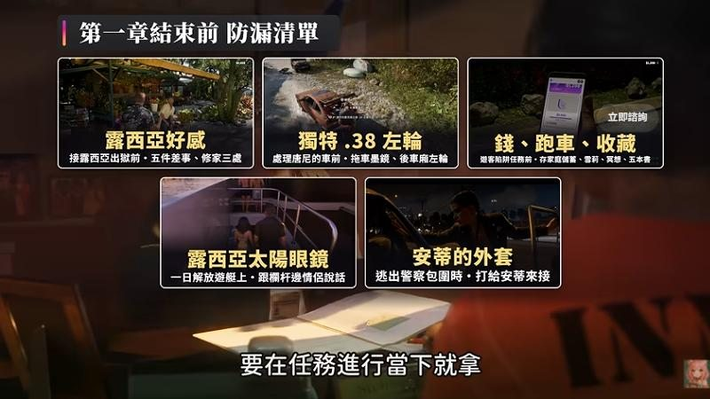
作者的總覽圖「第一章結束前 防漏清單」（影片 0:27）：5 個方塊 影片標題寫「12 件事」，但總覽圖只有上面 5 個方塊，沒有逐條編號，我讀不出作者怎麼數到 12，所以依影片內容展開成下面 17 個動作，數字對不上標題，請以影片為準。取樣約每 7 到 15 秒，沒讀到的細節寫「影片沒取樣到」。
主線任務清單：5 章 94 項
整理自 Threads 貼文（@cychenac）。中文任務名是攻略整理的參考譯名，不是官方名稱，遊戲裡看到的可能不同。內含劇情劇透 ，章節預設收合。
兩處譯名有出入：第一章「Recalibration」該貼文寫「重新調整」，台灣攻略站多半寫「重新整頓」。第二章「Breakfast Run」是早餐外送，「Checking Out」是退房時刻。第四章最後一項與第五章最後一項的名稱尚未確認。
搶劫教學：珠寶店、銀行、換裝脫身、賣贓
整理自玫玫物語的影片「完美搶劫教學」（9 分 9 秒，▶ 影片 ）。影片章節：0:33 珠寶店、3:50 銀行、7:33 換裝脫身、8:38 賣贓。補充一則銀行金庫的英文貼文放在最後。
影片字幕是中英雙語疊字，常常只有一半出現在取樣的畫面；取樣約每 15 到 25 秒，所以只寫我讀到的，後半句沒讀到的標明。沒有座標，也沒有說每間店在哪裡。「▶」連結的秒數是我看到畫面的秒數。
1 兩個大原則與開場影片 0:00 到 0:33
作者的原則：想全身而退，不能讓任何人報警 ，也不能在被看到的地方換裝 （出自影片說明欄）。
開場預告字幕：back door, empty out every safe, register, and display（後門進去、保險箱收銀櫃展示櫃全部搬空）。▶ 0:05
字幕：until you've taken everything, and once you leave, just ditch the mask and…（拿完全部、離開後把面具丟掉，後半句沒讀到）。▶ 0:20
2 珠寶店：踩點、關保全、銷毀錄影影片 0:33 到 2:58
標題卡「珠寶店」：先示範怎麼搶珠寶店 字幕：First, let's demonstrate how to rob a（jewelry store）。▶ 0:35 先踩點，停車位附近不能有監視器 畫面字樣「附近不能有監視器」；字幕：before robbing high-difficulty stores, scout your parking spot first（搶高難度的店之前先偵察停車位）。▶ 0:50 進店，抬頭看天花板找監視器 字幕：this store has no armed security（這家店沒有武裝保全）；Look up at the ceiling to spot…（後半句沒讀到）。▶ 1:05 到後門才用開鎖槍 字幕：only when you reach the back door, and use the lockpick gun to…；畫面註記「另一次示範：強行打開」。▶ 1:20 工作台 字幕：the workbench, and the system will 記下來 automatically once…（後半句沒讀到）。▶ 1:35 後方辦公室：牆上有面板，選「停用保全系統」 字幕：There's a panel on the wall; select "disable security system"。▶ 1:50 珠寶店有「銷毀監視錄影」的選項 字幕：Additionally, jewelry stores offer an option to destroy the footage。▶ 2:05 第一個重要規則：店內每個人都要在視線內 字幕：key to the first major rule. Everyone in the shop 都要在我們視線裡。▶ 2:20 用武器瞄準員工，尤其是看起來像要…的人 字幕：trained on the employees—especially those who look like they're…（後半句沒讀到）。▶ 2:40
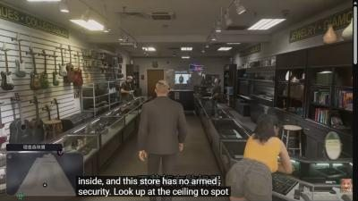
珠寶店內（1:05）：沒有武裝保全 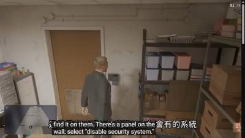
後方辦公室：牆上的保全面板（1:50）
3 銀行：選銀行、專注模式、保險箱影片 3:50 到 7:33（2:58 到 3:50 是螢幕支架業配，不整理）
作者說明欄：從珠寶店到保全強度高的銀行，完整示範踩點、潛行放倒保全、開保險箱、清大廳收銀櫃。
在地圖選銀行 畫面是地圖的「銀行差事」清單，選中的是一間州立銀行（名稱我讀成「德拉瑟斯州立銀行」，不確定），資訊欄有「保全強度」與「收入價值 $15,000 到 $45,000」。▶ 4:00 銀行的保全多、監視器多、員工也多 字幕：The bank is packed（銀行裡保全多、監視器多、員工也多）。▶ 4:25 保全持步槍、有的帶霰彈槍，休息區還有一個 字幕：rifles, some with shotguns, and another one in the break area; keep…（後半句沒讀到）。▶ 4:50 乾淨有效率；進銀行最好開專注模式 字幕：be clean and efficient. Inside the bank, it's best to trigger focus mode。▶ 5:15 開專注模式，爆頭處理掉 字幕：trigger focus, and take him out with a headshot；畫面註記「另一次搶劫：正面硬闖」。▶ 5:40 輸入密碼打開保險箱 字幕：Next, enter…（密碼輸入畫面，字幕「保險箱打開」）。▶ 6:05 蹲下別動 字幕：crouch down and don't move. You could actually leave（其實可以離開）；畫面註記「另一間銀行：收銀櫃沒搶」。▶ 6:30 趁保全發現前開專注、快速打倒 字幕：activate focus mode, and move quickly. Before security spots…。▶ 6:55 撤退；每間銀行不同，但有黃金原則 字幕：retreat. Every bank is different, but…the golden…（後半句沒讀到）。▶ 7:00
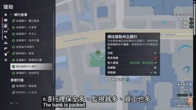
地圖選銀行：保全強度與收入價值（4:00） 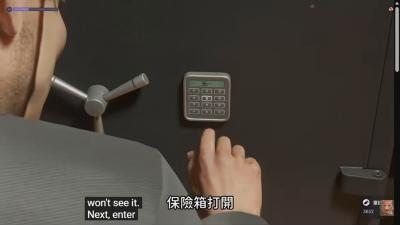
輸入密碼打開保險箱（6:05）
4 換裝脫身：換外套、紅色圖示消失影片 7:33 到 8:38
字幕：a bathroom stall and hide them out of sight. The job isn't over after…（躲進廁所隔間把東西藏起來；工作還沒結束）。▶ 7:35
字幕：jacket, instantly changing your look. The red icons will disappear（外套一換造型立刻改變，紅色圖示會消失）。說明欄寫的是「外套換防彈背心當場變成另一個人」。▶ 8:00
字幕：Once the red radar fades, you likely won't be caught, but don't hang around（紅色雷達消失後大概不會被抓，但別逗留）；畫面註記「另一次示範：警察就在旁邊」。▶ 8:35
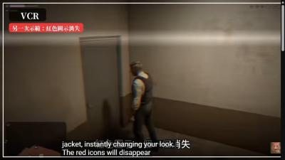
換外套，紅色圖示消失（8:00）
5 賣贓影片 8:38 到 9:09
說明欄：把贓物賣到最高價。畫面在銷贓商辦公室，字幕：…straight into your account. It's as simple as that（錢直接進帳戶，就這麼簡單）。▶ 9:00
各種贓物各賣多少錢，我沒有取樣到。賣贓價格與銷贓商說明見「車輛與賺錢」。
6 銀行金庫第一次就開成功（英文貼文）Threads @leonidarecapgta6，文字；作者標示 AI 配音
原文為英文，標題說金庫一袋 $1,000,000。作者標明內容轉述自 IGN 與 Clutchbase 的早期攻略，影片素材來自 Ludwig（Twitch）與 GuidingLight（YouTube），我沒有核對那兩個來源。
鑽孔： 兩個扳機都輕輕按住，量表到紅色前就放鬆。 鏡頭： 不要碰牆；向右轉到底，沿著電纜找到金色掛鉤。 掛上掛鉤： 然後按住兩個扳機並連打。 搜刮： 不到一分鐘，跳過鎖箱，直接拿現金推車。
作者建議：在任務「Safe Word」的保險箱練習。
留言說法・未驗證 有人說小銀行容易得多，保險箱密碼就在辦公室電腦上，從來不需要炸藥。貼文沒有說明是哪一間銀行，也沒有座標。
GTABase 互動地圖怎麼用
GTABase（gtabase.com）是 GTA 資料庫網站，GTA 6 專區有互動地圖、載具、武器、任務、角色、動物、電台、100% 檢查表、秘技與操作說明。這個攻略集裡「沒有座標」的東西，大多可以在它的互動地圖上找位置。下面是我實際開啟網站看到的畫面與操作，介面是英文。
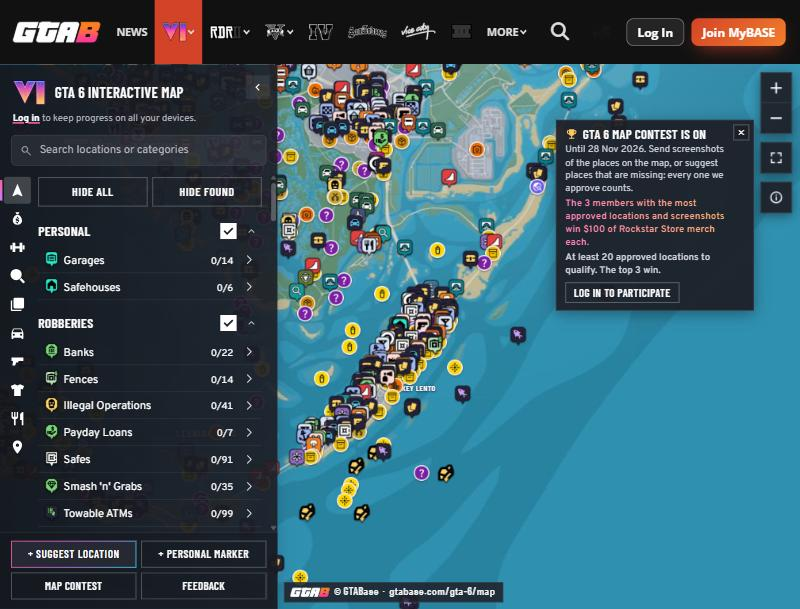
互動地圖畫面：左邊是分類清單與搜尋框，右邊是地圖與縮放按鈕（截圖時還有一則活動公告）。 1 開啟與基本操作
開 gtabase.com/gta-6/map/ 也可以從首頁上方導覽列點「GTA 6」再點「Map」。 左邊是分類，右邊是地圖 地圖右上有 + / − 縮放、全螢幕與資訊按鈕；左上角箭頭可以收合左側面板。 用搜尋框找東西 搜尋框寫「Search locations or categories」，可以輸入地點名稱或分類名稱（英文）。 點分類名稱可以顯示或隱藏那一類 我點了「Unique Weapons」，該列變灰、圖示消失；再點一次就回來。上方「HIDE ALL」全部隱藏，「HIDE FOUND」隱藏你已勾選找到的。 點地圖上的圖示會彈出說明卡 卡片有：名稱、分類、文字說明、「FOUND」勾選框、新增者與截圖作者、「ADD SCREENSHOT」（補截圖）、「REPORT A PROBLEM」（回報錯誤）。我點的收藏卡例子：「America's Next Top Hooker Card: Drake」，說明「Next to the chair by the campfire, near the tents.」（營火旁的椅子旁邊，帳篷附近）。卡片右下角有「1/13」的頁碼，我推測是同一類 13 筆之間切換，沒有進一步驗證。 2 進度紀錄
每個分類旁有「找到 / 總數」，例如 Garages 0/14、Safes 0/91。在說明卡勾「FOUND」就會累計。
頁面寫：追蹤進度免費，訪客存在瀏覽器裡，登入 MyBase 會員則可在所有裝置同步。我沒有登入，所以沒有測試 MyBase。
清單最下面有「RESET PROGRESS」，會重置進度；按之前先想清楚。
訪客進度存在瀏覽器，清除網站資料或換瀏覽器就會不見。
3 左側分類對照（我的翻譯，非官方）
頁面標示共 4,473 個地點、102 個分類（頁面寫更新於 2026 年 11 月 24 日；數字會隨更新改變）。和這份攻略相關的分類：
Weapons → Unique Weapons（103）： 獨特武器，找金色或傳說武器位置先看這一類。另有 Ammu-Nations（24，槍店）、Weapon Pickups（58，場景拾取武器）。Collectible Cards（19 個子類）： 收藏卡，對應「收藏卡片」那一章，例如 America's Next Top Hooker 13、Backyard Wrestling 15、Vice City Narcos 12。Collectibles： 收集品，包含 Luxury Watches（17，名表）、Magazines & Books（90，雜誌與書）、Hidden Package（115，隱藏包裹）、Meteorites（73，隕石）、Treasures（5，寶藏）、Stunt Jumps（130，特技跳躍）。Vehicles： 載具，包含 Standout Vehicles（281，特色載具）、Vehicle Spawns（63，載具刷新點）、Vehicle Requests（17，載具委託）、Mod Shops（14，改裝店）、Pay 'n' Sprays（19，噴漆店）。Robberies： 搶劫，包含 Banks（22，銀行）、Safes（91，保險箱）、Fences（14，銷贓商）、Smash 'n' Grabs（35，砸窗搶劫）、Towable ATMs（99，可拖走的提款機）、Illegal Operations（41，非法勾當）。Personal： Garages（14，車庫）、Safehouses（6，安全屋）。Activities / Style / Food & Drink / Local Places： 活動（籃球、釣魚、競速等）、服飾與髮型、餐飲、地標與警局等。
以上分類名稱是我看到的英文名；中文是我自己的翻譯，遊戲內繁中名稱可能不同。
4 搭配這份攻略的用法建議
金色／傳說武器：先看本站金色武器卡的步驟，再用 Unique Weapons 分類看地圖位置，兩邊對照。
只想看某一類：先「HIDE ALL」，再只點開要的分類，避免圖示太多看不清。
影片只給地圖畫面、沒有座標的地點（例如車輛與賺錢裡的貨櫃倉儲場、安柏西亞），可以用地圖搜尋地名或分類找近似位置。這是我的建議用法，我沒有逐一在 GTABase 上比對，不保證能對到。
地圖資料有社群投稿成分（有「Suggest location」與「Report a problem」），地點可能有誤或過時，以遊戲內為準。
5 其他功能與要注意的事
左下按鈕：Suggest Location（建議新地點）、Personal Marker（自己的標記）、Map Contest（地圖活動，頁面寫到 2026-11-28 止）、Feedback（意見回饋）。這些多半需要登入，我沒有登入，沒有測試。
網站導覽還有：Vehicles（載具資料庫）、Weapons（武器）、Missions（任務）、Characters（角色）、Animals（動物）、Radio（電台）、Strangers（陌生人任務）、100% Checklist（100% 檢查表）、Cheats（PS5／Xbox 秘技）、Controls（操作按鍵）。
網站首頁另有英文文章，例如近戰、提款機、警方通緝等主題。
網站有廣告；英文介面，網頁可用瀏覽器的翻譯功能。
隨機事件與彩蛋
社群分享的隨機事件、彩蛋與影片整理，共 4 則。多半沒有座標，位置請搭配「GTABase 地圖用法」章節找。留言說法我都標「留言說法・未驗證」。
1 開局必看攻略：自動開車、計程車、金幣、救人與事件（影片）Instagram @game_tom777 的 Reel（3 分 7 秒，簡體字幕已轉繁體）
取樣約每 7 到 8 秒，句子的前後文有缺；「（）」內是我讀到的畫面。留言區 81 則我沒有讀。
0:01 到 1:07 自動開車、計程車、打電話： 已移到操作技巧 章的「快速移動」。1:30 到 1:54 飛機失事事件： 已合併到下方「飛機失事事件」。0:03 與 0:05 開場預告： 字幕：否則錯過最「難看」的畫面！（碼頭邊）；和至少 5000 美元！（用高壓水槍沖洗船身）。這兩句的前後文我沒讀到，不知道指什麼。0:28 初始島的搶劫機會： 字幕：第二點說一下初始島上這個搶劫機會（畫面是地圖上的標記）。0:36 與 0:43 搶店要快： 字幕：一定要動作快，因為警察來得特別快；而且這個時候是可以進店瘋狂搜刮的。0:50 到 1:03 水下 4 個金幣： 字幕：這個地方一共能拿 4 個金幣；位置分別在這裡；第四個在船裡，游進來就能看到。畫面是水下。1:10 到 1:14 救受傷的潛水 NPC： 字幕：提前在受傷的 NPC 旁邊…就能完美救下這個 NPC。中間的步驟我沒讀到。1:22 「第四點就是你去做…」： 字幕只讀到這半句（畫面是地圖上的標記），後面沒讀到。2:10 到 2:26 人猿（大腳怪）事件： 字幕：會在路上遇到一個人猿；記得在遠處先用手機拍照；就能發現有一個人形的樹。2:34 到 2:42 ATM 與電話： 字幕：後面在 ATM 機會發現一個啟示；電話打過去就能開啟後續劇情了。2:50 到 2:58 夜店 919： 字幕：男女主會來到罪惡城最大的夜店 919；找不到路，你就可以挨個門進去一遍。3:05 結尾： 字幕：我是一點沒興趣，咱就不放出來了。
部分字幕的時間點因為我是跳著取樣，同一句字幕出現在好幾個取樣點，區間是我推測的；請以影片為準。
2 飛機失事事件（救護車、金色狙擊槍）Threads @john_liu818（文字）＋ Instagram @game_tom777 影片 1:30
看到飛機失事，先拿失事後掉落的東西 之後會有人開槍，記得先躲在旁邊。 等救護車來，救護人員下車後，把救護車開走 沿著路往外開。 路邊會觸發彩蛋：獵人誤射一個平民 上前協助，再開他的車把車趕走，他留在地上的是金色狙擊槍。
貼文沒有說在哪個章節、哪個位置，也沒有附座標。
留言說法・未驗證 有人說不用開救護車，開任意一台四人座的車也會遇到。留言說法・未驗證 有人說答應載傷者去醫院、送到醫院也會給槍；另一位說送的路上他和朋友吵架，轟了對方再送到醫院，也會把狙擊槍給你。留言說法・未驗證 有人說這其實是連續碰到兩件不同的隨機事件。留言說法・未驗證 有人把毒販都殺了就離開，作者回覆「真的是你的決定，結果會不一樣」。影片（Instagram @game_tom777「開局必看攻略」）1:30 到 1:54： 字幕：你能看到天空中有一架飛機失事；到了別管飛行員，他死定了；打完他們還能搜個一兩百美元；趕快跑，警察來得很快；他會在後面把錢放在你的郵箱裡。「誰把錢放進郵箱」我讀不出來。這支影片與 @john_liu818 貼文是否同一事件，影片沒說。
3 外星人彩蛋與永久屬性（影片，標題「練全狀態」）Threads @chen.lun.71 轉貼 @game_tom777 的影片（3 分 51 秒，簡體字幕已轉繁體）
影片很暗，約每 15 秒取樣一次，句子只有片段，前後文有缺。
0:02 字幕：教大家獲得永久的屬性提升。畫面是在健身房跑步機上，左側出現「專注上限已提升」「體力值上限已提升」「生命值上限已提升」三項提示。0:05 字幕：第一個是全三維屬性。0:15 字幕：外星人逮捕一個肥胖少女的彩蛋。0:30 字幕：因為接下來的場景比較黑。0:45 字幕：這個密碼呢是由 1234 四個數字組成的。畫面有「RESTRICTED AREA」告示。1:00 字幕：就可以在這裡亂輸。畫面是門禁，左上角有一張密碼對照表，字太小讀不出。1:30 字幕：離開這個地下研究基地。1:45 到 2:00 畫面是碟形飛行物與墜毀處，這兩個畫面沒有字幕。2:15 字幕：第一個家的上方。畫面是地圖。2:30 字幕：如果大家找不到這個污水廠的位置。畫面是地圖上的標記區域。2:45 字幕：我們不要出去硬剛。畫面是一間金屬地板的暗室。3:00 畫面是地圖，字幕提到一個郡名（我讀成「魯蔓科斯郡」，可能是 Lummox County 的音譯）。3:15 字幕：就可以獲得這個耐力加成。3:30 畫面出現「吃／拒絕」選項，字幕：這裡一定要選擇吃。3:44 字幕：他是每隔一大段時間再刷一次啊。
留言說法・未驗證 有人說外星人事件雖然綁定單人觸發，但最後解的時候可以兩個角色一起去，兩人都能加到屬性。留言說法・未驗證 有人問「第三章還可以做這個嗎」，另一位回「可以」；也有人問第幾章開始能遇到，沒有人回答。留言說法・未驗證 有人說外星人最後以摩斯電碼講「THANK YOU」。留言說法・未驗證 有人問「不小心舉槍嚇走凱爾，還能不能拿草莓」，沒有回覆。
4 隕石 $50、蛋白棒回血Threads @archerglimmer，文字
貼文：有一顆隕石，賣 $50，走過去就撿得到（位置貼文沒說）。
作者回覆：遊戲裡可以吃 25 次；一根蛋白棒 $2，餓了或受傷就按 R 吃。
作者回覆：$50 差不多是隨機搶劫 3 到 5 次的收穫。
留言說法・未驗證 有人說隕石可以留到後面，解鎖網路拍賣後掛上去賣更多。留言說法・未驗證 有人說第二章躲警察時，靠近擱淺的鯨魚會氣爆，噴出一顆隕石和古柯鹼。
5 遊戲情報局兩支短片：搜刮點、隱藏槍械Facebook Reel，畫質很差，只整理讀得到的
兩支短片都是 Facebook 的登入牆底下播放，畫面被蓋成淡灰色，字幕很小很淡，我讀到的比其他影片少很多。下面只列我讀得清楚的，其餘請看原影片。
① 「GTA6 最離譜的搜刮點」（69 秒）
標題字幕：這是最離譜的搜刮點。
約 0:10：就在 Balcero 正下方（畫面是地圖）。這個地名可能就是「金色武器」章 H-AT 火箭筒卡的「巴爾塞羅（罪惡城西北邊）房車地下室」，我推測是同一處，影片沒有明講。
約 0:16 到 0:34：然後往下走；然後進到房子裡；再走進右邊的房間。
約 0:46：還有一個發射器（可能是火箭發射器）。0:58：然後走進辦公室。
沒有座標；其餘字幕沒讀到。
② 「GTA6 開局隱藏多把最強槍械位置」（56 秒）
只讀到標題與少數地圖畫面（0:04 是一張標了郡名的地圖，郡名我讀不清楚）。字幕太淡，我沒有整理步驟，也無法確認是哪幾把槍。
標題寫「開局」，但影片沒有明確說是第幾章；可以對照「依章節查」章：Somi 與見塵的影片標題才有寫第一章。
金色武器與稀有武器
以 5 支 YouTube 影片為主（Somi 醬、梅卡梅、見塵、阿翊），並把先前圖文貼文與影片中重複的武器合併。每張卡都標出是哪支影片的哪一秒，拿到後按「已取得」。名稱以影片字幕為準，各支影片的譯名不同，我用括號補充。
隱藏地點
只有地圖、沒有講答案的貼文。內容以圖片與留言為主，留言說法我都標為未驗證。
南凱利郡海邊的標記點貼文標題：去了之後你會回來感謝我（@dosloveyou）
貼文只有這張地圖。目的地標記在南凱利郡西側的海灘，附近有卡普里與陸龜湖，畫面下方字幕為「在區域尋找包裹」。
貼文沒有文字說明，也沒有講那裡有什麼。
留言說法・未驗證 留言者 xuanlllzz 表示：有一棟屋子在開裸體派對，旁邊那棟大門口旁有個小黃箱，裡面有張金卡。這則留言的讚數最高。留言說法・未驗證 另一位留言者只找到一張卡片；也有人說「後面可以回去」。其餘留言多半只是收藏。
收藏卡片
遊戲裡可以收集的卡片。目前只整理到貼文給的兩張。
家裡附近的兩張收藏卡片貼文標題：家裡附近有兩張卡片可以取得！（@fraieinsam）
貼文只有 4 張圖，沒有文字說明：兩張地圖截圖（標有房屋圖示與載具圖示的海岸一帶），以及兩張取得後的卡片。哪張卡在哪裡，貼文沒有講。
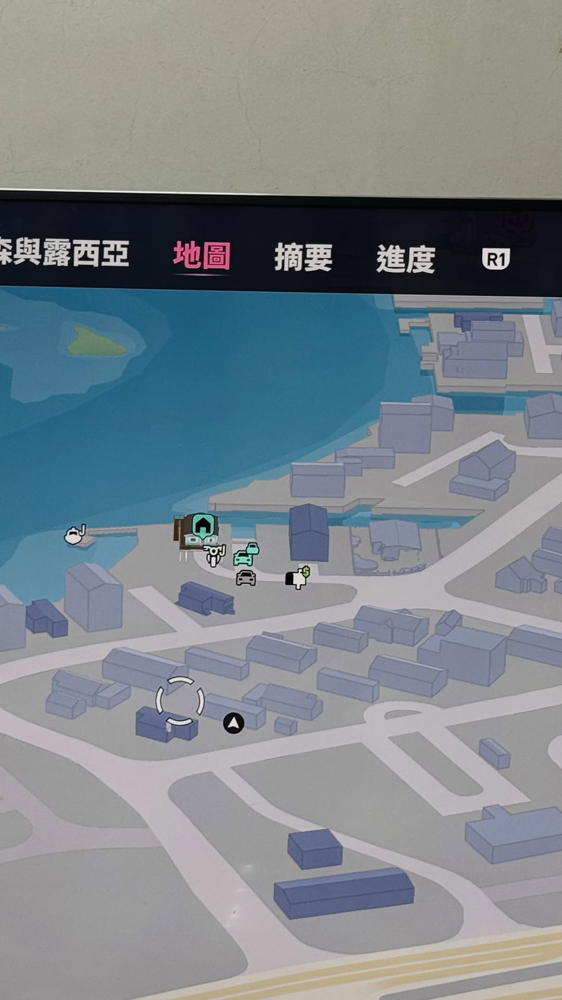
地圖：房屋圖示在海岸邊 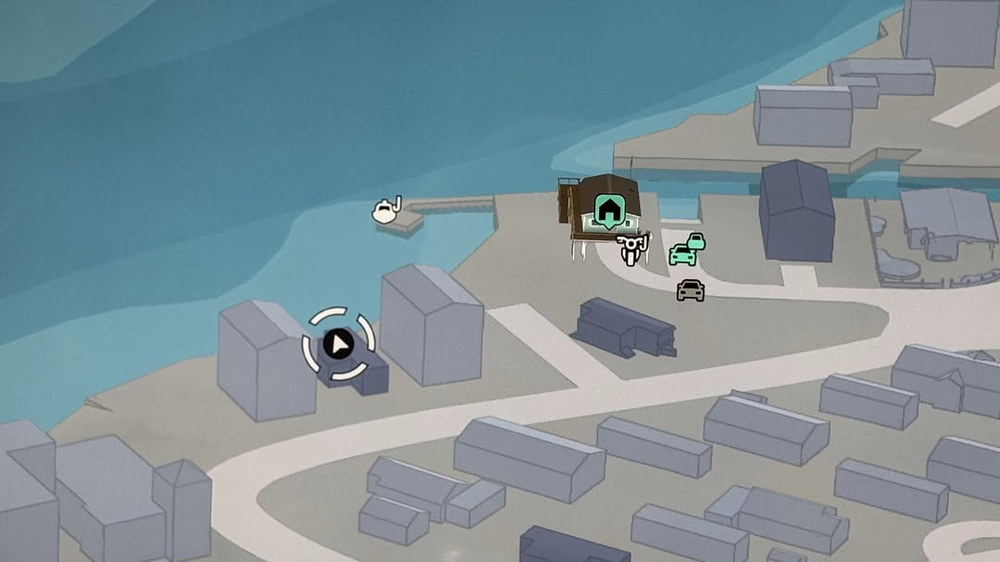
地圖特寫 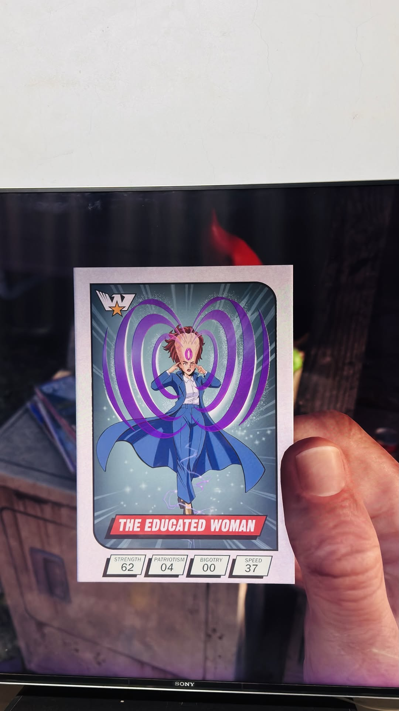
卡片：The Educated Woman（Strength 62、Patriotism 04、Bigotry 00、Speed 37） 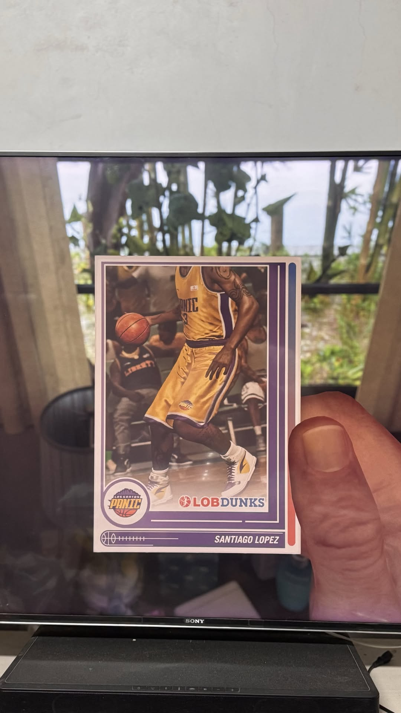
卡片：Santiago Lopez（LOBDUNKS・Los Santos Panic）
留言說法・未驗證 留言者 roc_840426 說「肯頓這邊一張」，另一張位置沒人補充。其餘留言幾乎都是「存」。
車輛與賺錢
整理自 YG tech 的影片（10 分 49 秒），主題是前中期就能拿到的超跑與高級車，附刷錢方法與幾把傳說武器。約每 12 到 15 秒取樣一次（7:05 之後的幾段加密到每 5 秒）；0:00 到 2:20 是開場與手把業配（中間有一張作者自己也不確定的作弊碼表），沒有攻略，不整理。
影片描述欄的章節時間和我取樣到的實際畫面有幾處對不上（例如 5:57「凡妮莎的粉紅跑車」章節，我在 6:50 才看到她的簡訊與粉紅跑車）；7:05 的肌肉車我實際看到標題卡在 7:08，所以每項的「▶ 影片」時間是我實際看到畫面的秒數，不是描述欄章節。刷錢數字與「11/21 實測還能用」有關，遊戲更新後可能改變。字幕只有短句，兩次取樣之間的話我沒讀到，沒讀到的步驟寫「影片沒取樣到」，沒有座標。
名詞說明（本章與「社群賺錢與載具」共用）
登記： 車輛資訊畫面有「登記費用」。開局十件事的字幕說「登記好以後才算你自己的車」，街上順來的車不算。出售價值： 車輛資訊畫面的「出售價值」，賣給銷贓商或噴漆店的價格。例子：皇家紅寶石艾默瑞思出售價值 $30,000、登記費用 $29,900（Instagram @ezgoson）；藍色跑車出售價值 $21,250、登記費用 $70,000（Facebook Zico利扣）。權限、保全、追蹤器： 車輛資訊畫面的三欄，常見畫面是「權限 已解鎖」「保全 已解除」「追蹤器 無」。多支影片特別強調「沒有追蹤器」；我推測是追蹤器會讓偷來的車被定位，但影片沒有完整解釋，請以遊戲內說明為準。車庫： 社群貼文（Threads @su_o925）說在手機 App「罪惡市房地產」購買，畫面例子是 $30,000 的車庫；沒錢登記時可先買便宜車庫，車放進去不會消失，等有錢再登記。有人問車庫在哪買，貼文沒回答。
社群賺錢與載具
社群分享的賺錢方法、免費或偷取的車，共 2 則（原本 7 則，同主題的已合併；銀行金庫移到「搶劫教學」）。YG tech 長影片的整理在上一章「車輛與賺錢」，這章是其他來源的補充，兩邊的做法與數字有出入時並列，以遊戲內為準。更新後有些方法可能失效，留言說法標「未驗證」。
1 倉庫刷錢：原版、優化版與小熊 3.0Threads @link.5730＋Facebook YG tech 短片＋Facebook 社團影片
同一個「哈姆雷特倉庫反覆刷新、賣給銷贓商」的做法有三個社群版本。「車輛與賺錢」章裡有 YG tech 長影片的逐秒整理（有 ▶ 影片連結與截圖），想對照原片請看那一組。
版本 A：原版 Bug（Threads @link.5730，簡體原文已轉繁體）
作者標題寫「給進入第三章後不想努力的你」：
登記一輛能裝 10 包袋子的麵包車，開去 P2 的小熊麵包車倉庫 拿完一輪後，站在捲簾門底下，把倉庫外的車開遠一點 迅速切換角色到 Lucia，再切換回 Jason 會發現麵包車又刷出一輛。 反覆拿、反覆裝滿自己的麵包車，賣給泰龍 作者說手速快，一下子就有 11 萬。
版本 B：優化版 4 步驟（Facebook YG tech 短片，59 秒，描述欄）
作者說：看有些人說那個刷錢大法被修了，剛剛測試後還是可以用，順便附上優化版本。影片標題「GTA6 無限刷錢 優化版」：
前往哈姆雷特右上角 搜兩台貨車的後車廂和保險櫃 開車到倉庫北邊的十字路口，開回來，古柯鹼就刷新 用貨車來回載 10 袋，去找銷贓商賣掉
短片的畫面字幕我只讀到部分（STEP 1、STEP 4 的標題卡，以及「每次過來的時候就搜外面跟裡面」這類字樣），其餘以描述欄為準。
版本 C：小熊 3.0（Facebook 社團貼文的影片，2 分 39 秒）
社團「《俠盜獵車手VI》GTA6 中文玩家交流區」貼文，標題：這才是小熊 3.0 最詳盡的解說，車庫裡箱子打不開是因為進度不足導致；影片標題：GTA6 最快刷錢大法 3.0 詳細版本。字幕是簡體，我約每 8 秒取樣一次，影片播到約 2:15 之後在我這裡出現播放錯誤，所以後半沒讀到。能讀清楚的字幕：
0:09 OK，我們直接進入正題。0:17 然後第二項準備工作（畫面是手機）。0:25 我買的第一個車庫在這裡（畫面是地圖，地名我讀不清楚）。0:33 OK，前置條件做完呢（地圖）。0:41 到 0:57 先隨便選一個主角開車過去；然後我們操控的主要角色…讓後面那個角色開車跟著你（兩個角色各開一台車）。1:05 到 1:13 電影視角的自動駕駛過來之後…這個車就會一直在你的車庫。約 1:20 到 2:15 的字幕太破碎（例如「這段路程比較久的話」），我不列，請看影片。
我讀到的只有準備工作（買車庫、兩個角色各開一台車、用自動駕駛把車開過去），沒有讀到刷錢的核心步驟。
留言說法・未驗證 有人說車庫刷錢會把車庫刷出 Bug，車庫無法使用，要先存檔（4 讚）。留言說法・未驗證 有人說現在已經出現四台車一起刷。留言說法・未驗證 有人說 2.0 比較安全、慢一點，3.0 會出 Bug，車庫用不了又要重玩。貼文標題說「車庫裡箱子打不開是因為進度不足」，與留言說「車庫會壞」兩個說法並列，我沒有驗證。
各版本的差異與矛盾
A 靠「切換角色」刷出新的麵包車；B 靠「開到北邊十字路口再開回來」刷新古柯鹼，並要先搜兩台貨車。兩者刷新的東西不同。
「車輛與賺錢」章的長影片提醒「千萬不要開小熊車」（開到要重新讀檔，我沒讀到原因），看起來與 A 登記小熊麵包車的做法相衝突。我沒有驗證，請自行判斷。
作者回覆：他是 Xbox 版，還沒收到 R 星的第一次更新，更新後能不能用他不知道。
留言說法・未驗證 有人說更新後一樣有用（「特別去試了」）；另一位說更新後被改了，車子會不見，但東西還能重複拿。兩種說法相反，請自行測試。留言說法・未驗證 有人說實測一袋只有 $7,200、十袋才八萬多、最多 $40,000，與標題的 11 萬不一致，可能跟價格浮動或保險箱是否已開有關，沒人確認。留言說法・未驗證 有人說第三章隨便搶路上的車去噴漆店賣，就有 $10,000 到 $15,000，不需要刷。
2 免費拿車的 4 種做法偷超跑、穿牆 Bug、萬聖節痛車、免費痛車
四種「不用買就能拿到車」的做法，來源與風險各不相同，先看比較再展開各自的步驟。名詞（登記、追蹤器、出售價值）見「車輛與賺錢」章開頭的名詞說明。
偷超跑（Instagram @ezgoson）： 白色豪宅裡的皇家紅寶石艾默瑞思；沒警報、沒追蹤器；出售價值 $30,000、登記費用 $29,900。穿牆 Bug（Facebook Zico利扣）： 需要卡進牆的 Bug 點，作者試了快 30 分鐘；藍色跑車（名稱沒讀清）；登記費用 $70,000、出售價值 $21,250。萬聖節痛車（Threads @daxiongx）： 第二章高級住宅區某房子門口，不用偷、直接開走；回去會重生可重複領；賣給阿摩 $1,700。免費痛車與保險箱（Threads @chincheek_）： 進房子左轉車庫有免費痛車，右轉有保險箱（$1,024 加一支手錶）；5 張縮圖。
① 偷超跑，賣掉賺 $3 萬（Instagram @ezgoson 的 Reel，55 秒）
標題：GTA6 不用開戰就能偷超跑，賣掉賺 3 萬。約每 7 秒抓一次畫面字幕：
先打開地圖 （0:04） 找到這個位置 地圖上顯示導航點「目的地」與一段不到 1 英里的距離。（0:09） 找到這棟白色豪宅 （0:16） 已解鎖・沒警報・沒追蹤器 車輛資訊：皇家紅寶石艾默瑞思；權限已解鎖、保全已解除、追蹤器無；出售價值 $30,000、登記費用 $29,900。（0:23） 先到前面打開大門 （0:30） 選最近或喜歡的噴漆店 地圖上選噴漆店賣車。（0:38） 下次路過豪宅，先掃一下 （0:46）
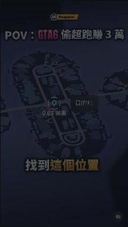
地圖（0:09） 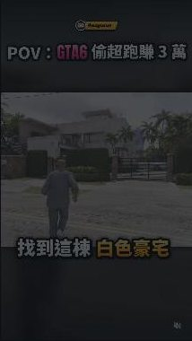
白色豪宅（0:16） 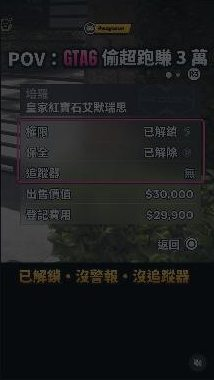
車輛資訊（0:23） 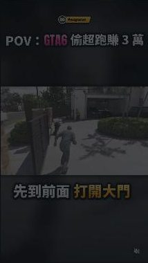
大門（0:30） 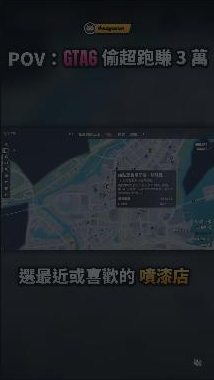
噴漆店（0:38）
影片沒有座標，也沒有說在哪一個地區。畫面車款與「車輛與賺錢」章的紅寶石艾默瑞思同名，位置是否同一處，影片沒說（那一組已補上這裡的價格）。
留言說法・未驗證 有人說「偷了虧兩萬九，登記了發現沒後車廂」，與作者的「賣掉賺 3 萬」說法不同（登記費用 $29,900 與出售價值 $30,000 差不多）。留言說法・未驗證 有人說賣掉就沒有了，也有人問賣掉還會不會刷新，沒人回答。留言說法・未驗證 有人說路過掃描時，基本上都有追蹤器。
② 穿牆 Bug（Facebook Zico利扣，59 秒）
標題：GTA6 超扯穿牆 BUG！竟然能免費獲得最有價值超跑。我第二次重讀，約每 2 到 3 秒取樣一次，全片 59 秒的字幕大致讀完。開場字幕：「性能爆表的布加迪」（0:01）、「一定要看完」（0:03）、「先追蹤起來，典藏影片，怕你之後找不到」（0:06 到 0:08）。流程：
首先來到地圖上這個位置 地圖上有一塊白線框起來的島區（位置在水邊），沒有座標。（0:10） 目標是一間門口用木頭做的房子 字幕：門口用木頭做的。（0:12） 靠近會有警衛；要打掉他 字幕：當你靠近就會有警衛…你；看你要把他打掉。畫面是角色把一個人打倒在地。字幕第一句的中間幾個字我沒讀清楚。（0:14 到 0:16） 接著翻牆過去 （0:19） 旁邊有台大 G 可以開 黑色 G 級越野車停在院子裡。（0:21） 把車子移到兩個車庫 字幕：把車子移到兩間車庫。（0:23） 製造一個可以讓角色跳進去的… 字幕只讀到這句，後面的話我沒讀到；畫面是角色站在大 G 前。（0:26） 卡牆壁 Bug 點 （0:29） 我試了快 30 分鐘，才找到這個神祕 G 點 作者說這個位置很難找。（0:31 到 0:33） 跳進去後按下蹲下 （0:34） 接著打開手機 （0:36） 神奇的事情發生了 畫面是手機主畫面。（0:38） （藍色跑車出現） 0:40 字幕模糊讀不出，畫面是一台藍色車，在暗處。 當然這台車要拿去賣掉，或是花 7 萬登記成自己的 畫面：登記費用 $70,000、出售價值 $21,250，權限已解鎖、保全已解除、追蹤器無。（0:42 到 0:43） 牆壁旁有鐵門按鈕，打開就能輕鬆出去 （0:45 到 0:47） 性能：這車性能真的很誇張，都是直接彈射起步 （0:49 到 0:51） 結尾：歡迎追蹤 IG、訂閱頻道；「如果覺得找地點…」 （0:54 到 0:57）後半句被截掉，沒讀到。
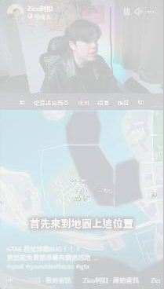
地圖（0:10） 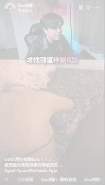
神祕 G 點（0:33） 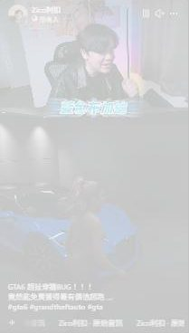
藍色跑車（0:40） 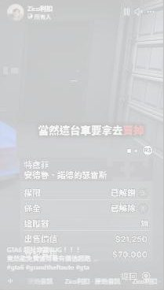
車輛資訊（0:42）
字幕只有短句，我沒聽到語音，所以「在哪個動作穿牆」「按什麼鍵」都沒講明；影片的穿牆點是在哪個姿勢與角度，字幕只說「跳進去後按下蹲下」。上面流程的前後順序是我依字幕時間排的。
藍色車與車庫的關係（車在兩間車庫的哪一間）影片沒有講清楚，我不編造。
字幕與標題的「最有價值」不一致：畫面的出售價值只有 $21,250，登記要 $70,000。車款名稱我看不清楚，沒寫進來。
沒有座標，只有 0:10 的地圖畫面。
③ 萬聖節痛車（Threads @daxiongx）
作者在第二章夜晚，到地圖左下的高級住宅區閒逛，看到一間萬聖節裝飾的房子，門口停著萬聖節痛車，不用偷就能直接開走。
他把車開回車庫，回去拍照時發現這台車重生了。一台自己留著開，一台賣給阿摩，賣了 $1,700。
貼文沒有附座標，只有「地圖左下的高級住宅區」這句話。
留言說法・未驗證 相關串文有人說這台南瓜車居然要家園 21 級才能使用，貼文沒有確認。
④ 免費痛車、保險箱 $1,024 加手錶（Threads @chincheek_，5 張圖）
貼文原文：房子進去，右轉有保險箱（$1,024 加手錶一支），左轉有免費痛車。可以搶劫屋主，但他身上什麼都沒有。進去拿完東西就可以走了，他很忙，不會發現。
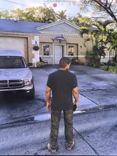
1. 房子外觀：門口停著皮卡，角色站在街上 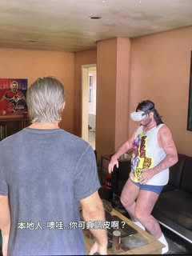
2. 屋內：屋主戴著 VR 頭盔，字幕「噢哇，你可真愛玩啊？」 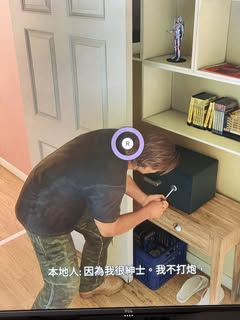
3. 保險箱：角色蹲著撬，提示「R」 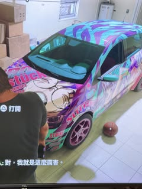
4. 車庫裡的痛車（動漫貼紙塗裝），提示「△ 打開」 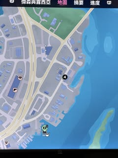
5. 地圖（螢幕翻拍）：標記在水邊建築區，沒有座標
圖片是貼文的縮圖版本（寬約 210 到 320 像素），我抓不到原圖，放大會模糊。
貼文沒有寫座標，也沒有說在哪一區。第 5 張只是地圖翻拍。
留言說法・未驗證 有人回「Key lento」（蘭托礁島，與「第一章要做的事」的迷你超市同一區），沒有其他佐證。留言說法・未驗證 有人問「所以要第二章過後嗎」，另一位回「要通關後才能使用」，兩人說法不同，貼文沒有確認。留言說法・未驗證 有人說保險箱的 R 鍵轉不成功（「沒有一次轉成功」），沒有人回覆做法。留言說法・未驗證 另有人問「集 10 支名表可以解鎖快轉、20 支可以暫停是真的嗎」，沒有回覆。
設定篇來源：Threads 貼文（@alcatelg，GTA 6 版），內容為截圖與留言。
金色武器篇來源：Threads 貼文（@sdddrd），圖文原作者標示為 xhsRushGames，共 8 張圖（封面加 7 頁）。地圖截圖取自這些圖，存放在 assets/maps 資料夾。
開局十件事來源：Threads 貼文（@game_tom777）的影片，僅讀取畫面字幕。
「隨機事件與彩蛋」第 1 則來源：Instagram @game_tom777 的 Reel「開局必看攻略」（只讀畫面字幕）。另一支 Instagram Reel（DgHz6Wfouva）因為標示年齡限制、需登入才能看，我沒有讀，沒有整理。
社群三章（社群小技巧與規則、隨機事件與彩蛋、社群賺錢與載具）來源：Threads @andrewjao.0222、@john_liu818、@archerglimmer、@daxiongx、@link.5730、@leonidarecapgta6、@chen.lun.71（轉貼 @game_tom777 影片）；Instagram @ezgoson 的 Reel；Facebook YG tech 遊戲頻道、Zico利扣的 Reel。圖為影片畫面，存放在 assets/frames，版權屬原作者。GTABase 互動地圖畫面取自 gtabase.com（assets/tips/gtabase-map.jpg），版權屬 GTABase。
隱藏地點、收藏卡片與金色武器後 7 把的來源：Threads 貼文 @dosloveyou、@sdddrd、@fraieinsam、@yichen810303，圖片存放在 assets/maps、assets/sniper、assets/cards；留言說法皆未驗證。@yichen810303 的兩篇內容在 YouTube 影片，我依影片的英文自動字幕整理成時間軸，可能有誤。
金色武器、第一章要做的事、車輛與賺錢的來源：YouTube 影片（Somi 醬 lvZveGgR0tQ、玫玫物語 -xLXo_dnax4、梅卡梅 tXsAMlrkDTo、見塵 ACiUCjoH91o、YG tech 472k7Y0ttoA）與前述貼文；摔角手與下車技巧：YouTube 影片 3ko7ycLUULk；社群小技巧：Threads @su_o925（DgFWE0nE-pr、DgNIK3MEccB）、@chincheek_（DgFoEGIE6_e），圖片存放在 assets/posts。截圖為影片畫面，存放在 assets/frames，版權屬原創作者，僅供個人參考。名稱依影片字幕，各影片譯名不同。
搶劫教學：YouTube 玫玫物語 AVMWbj_wkM8（只讀畫面字幕，約每 15 到 25 秒取樣）。依章節查：依各影片標題、說明欄與貼文原文整理。社群補充：Facebook 社團「《俠盜獵車手VI》GTA6 中文玩家交流區」的小熊 3.0 影片、Facebook 遊戲情報局兩支 Reel；影片畫面截圖版權屬原作者。
操作技巧篇來源：你提供的圖片，作者不明，存放在 assets/tips。
任務清單來源：Threads 貼文（@cychenac），原圖標示畫面取自 BeardBear 的 YouTube 影片；譯名非官方。
武器篇原圖為簡體中文，名稱與地名由我轉成繁體，可能與遊戲內繁中名稱不同，請以遊戲內顯示為準。
貼文附的原影片為 YouTube「MoYo TIPS ON」的 PS5 設定教學，本頁未讀取影片內容。
數值皆為社群推薦值，並非官方建議。截圖中有幾個項目的標籤被裁切，已依可見文字照錄。